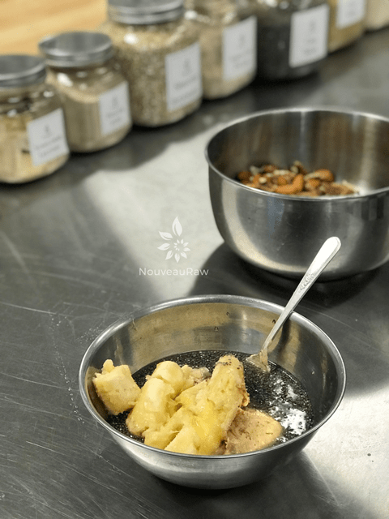
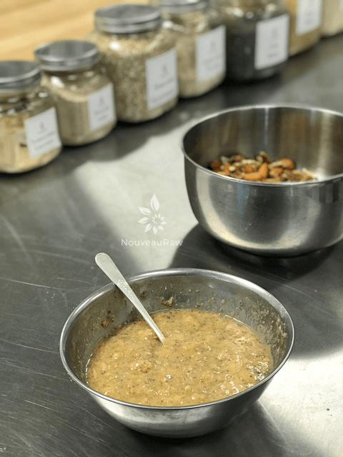
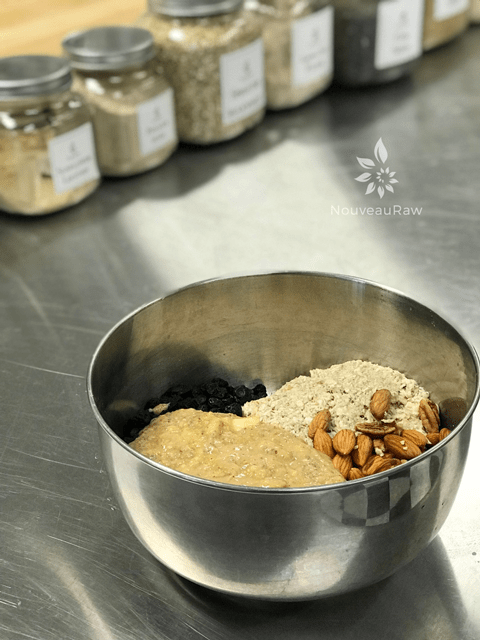
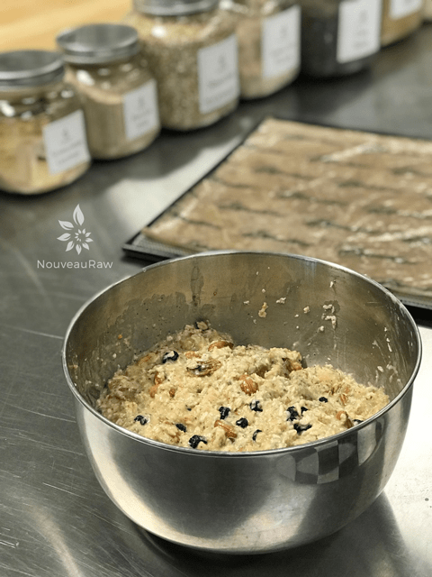
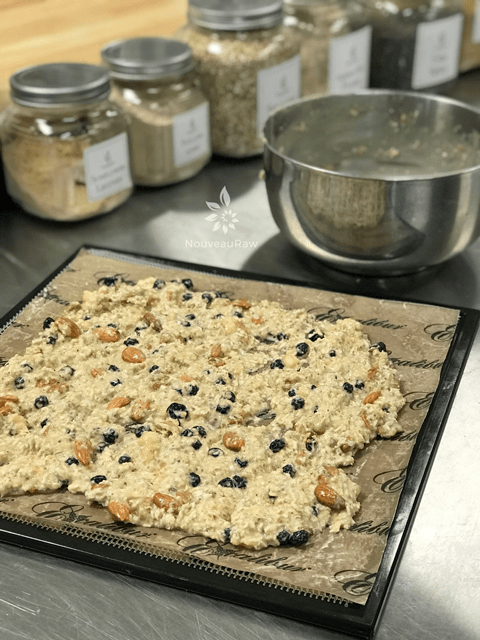
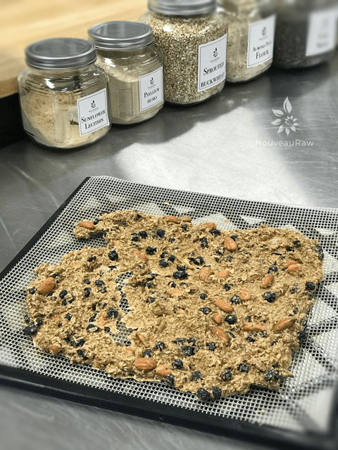

Blueberry Banana Granola
~ raw, vegan, gluten-free ~
Homemade granola can be a healthy, comforting, and delicious treat. Keywords “can be”… Most of the store-bought granola is high in refined sugars, contain unhealthy fats, and is packed full of fillers and unnecessary ingredients.
Take control…
Creating your own at home is super easy, quick, and allows you to control the amount of sugar, and quality of ingredients… that plus being able to change things up by adding in the flavors that you love. And let’s not forget… It also makes your house smell amazing – like you’ve been slaving in the kitchen all day.
This granola fills you with a rich, warm comfort-food flavor. But beyond flavor, it feeds your body some pretty good darn nutrients. Oats have a robust flavor offering many nutritional and health-promoting properties. They help to lower cholesterol, are an excellent source of phytonutrients, and help to stabilize your blood sugar. There are many more health reasons to add them to your diet, but those are a few to get you started.
I tend to add nuts and seeds to my homemade granola for flavor, texture, extra nutrients, and added healthy protein. They also offer up fiber, healthy monounsaturated fats, vitamins, nutrients, and antioxidants. I used peanut butter in this recipe, feel free to use almond or any other nut butter that fits into your list of “approved foods.”
I did use raw honey which isn’t vegan, so feel free to use any other liquid sweetener that you approve of. Raw honey aids your stomach and digestion, good for healing ulcers, and has been shown to be anti-fungal, antiviral, and anti-bacterial. So in just a few short sentences, you can see that this granola is pretty darn good for you! :) I hope you enjoy this recipe.
Yields 8 cups granola clusters
- 2 1/2 cups (235 g) gluten-free rolled oats, soaked
- 1/2 cup (70 g) raw almonds, soaked & chopped
- 1/2 cup (50 g) raw pecans, soaked & chopped
- 2 cups (150 g) fresh or dried blueberries
- 2 large (360 g) bananas, ripe (approx. 1 1/2 cup)
- 1/2 cup (130 g) natural almonds or peanut butter
- 1/4 cup (60 g) raw honey or coconut nectar
- 1 Tbsp (10 g) chia seeds, rehydrated in 1/2 cup (100 g) water
- 1/4 tsp (2 g) Himalayan pink salt
Preparation:
- After the oats are done soaking, drain, and rinse them under cool water for 2 minutes.
- Use your fingers to agitate them while rinsing.
- Hand squeeze the excess water from them and place them in a large bowl.
- Drain and rinse the nuts, adding to the bowl with the oats and blueberries.
- In the food processor, fitted with the “S” blade, combine bananas, peanut butter, sweetener, chia seeds (along with soak water), and salt. Process until nice and smooth.
- Taste test and see if it is sweet enough. It all depends on the sugar level content of your bananas.
- If you want a sweeter taste just add more sweetener.
- If you can’t eat peanut butter feel free to use any nut butter.
- Pour over the nuts and oats, mixing until well incorporated.
- Drop clusters of batter on the non-stick sheets that come with the dehydrator.
- If you don’t own non-stick sheets, you can parchment paper but not wax paper. Food tends to stick to wax paper.
- Dehydrate at 145 degrees (F) for 1 hour, then reduce to 115 degrees (F) for 16 hours or until dry.
- Dry times will vary due to climate, humidity, and how full the machine is.
- Store in an airtight glass container. Place in fridge to extend the shelf life.
- Why do I specify Ceylon cinnamon? Click (here) to learn why.
- Are oats gluten-free? Yes, read more about that (here).
- Are oats raw? Yes, they can be found. Click (here) to learn more.
- Do I need to soak and dehydrate oats? Not required but recommended. Click (here) to see why.
Culinary Explanations:
- Why do I start the dehydrator at 145 degrees (F)? Click (here) to learn the reason behind this.
- When working with fresh ingredients, it is important to taste test as you build a recipe. Learn why (here).
- Don’t own a dehydrator? Learn how to use your oven (here). I do however truly believe that it is a worthwhile investment. Click (here) to learn what I use.
-

-
Mash the banana with other ingredients indicated above with a fork.
-

-
Go ahead and leave some banana lumps for texture.
-

-
Add to the bowl of other ingredients.
-

-
Combine everything really well.
-

-
Spread on the dehydrator sheets and dry.
-

-
Once dry, place in food processor and pulse to a crumble.
© AmieSue.com